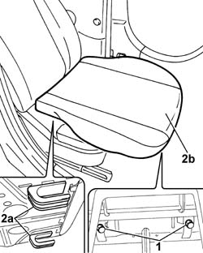

7045A14 Front seat CUSHION ASSEMBLY (one), left or right - R.R.
- Path
- Procedures > 70 FITTINGS > 7045 FRONT SEATS > 7045A front seat assembly > 7045A14 Front seat CUSHION ASSEMBLY (one), left or right - R.R.
- Kind
- repair procedure (removal / refitting; the operation number is the code)
- Applies to
- all engines; all production periods
- Interactive page
- https://sloeber94.github.io/elrnDB-fPnd/en/#/2753224
Applies to: all engines; all production periods
 Removing
Removing
 Refitting
Refitting1. Undo the bolts fixing the cushion assembly to the front seat frame.
2. Move the cushion assembly forwards until the rear fasteners (2a) are released, then lift up the cushion complete with cover and upholstery (2b) and remove it.

Applies to: all engines; all production periods
Refitting
RemovingCheck the condition of the cushion assembly and upholstery.
Check the condition of the rear plastic fasteners.
Fit the cushion assembly posititoning the rear fasteners in the housing in the front seat frame.
Tighten the bolts fixing the cushion assembly to the front seat frame.
Topics that link to this page (5)
- 7045A17 HOOK securing non-folding cushion of a front seat (one), left or right - R.R .
- 7045A36 drivers seat manual height adjustment device - r r
- 7045A61 JOINTS on driver's front SEAT LIFT device - R.R .
- 7045A79 FRAME of tilting CUSHION of a front SEAT, left or right - R.R .
- 7045D20 Front seat CUSHION COVER, left or right - R.R .